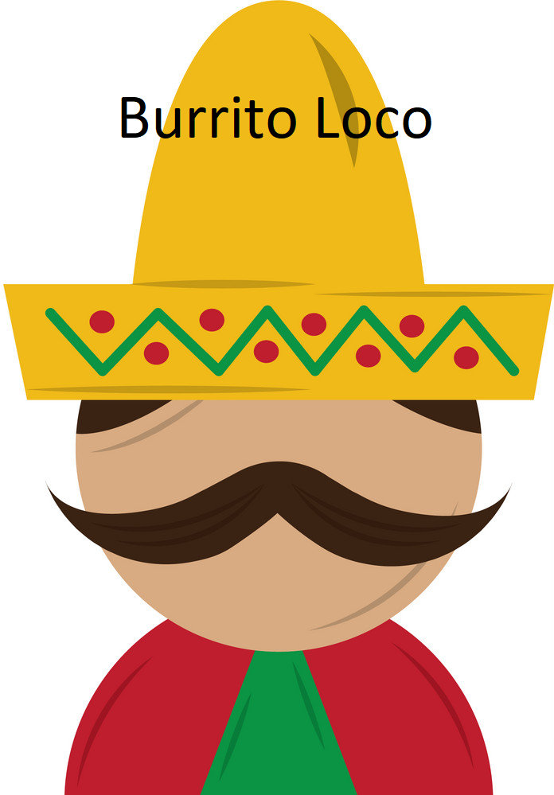

Welcome!
Serving since 2014
Located in the heart of the city Burrito Loco opened its doors after three close friends from mexico
realised that there is no authentic mexican cuisine in Dublin. Our recipies are made using
the freshest ingredients prepared simple and tasty the traditional way.
